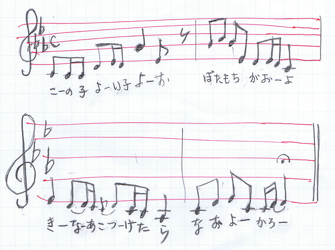

子育ての森の中に、数えるほどしか生えていない“子守歌”の木があります。絶滅危惧種に指定されています。私の母の世代では、全国沢山に生えていたのでしたが、次第に数を減らしていきました。
息子は、私の母つまりおばあちゃんから、たっぷり子守歌を唄ってもらいました。私の息子の世代ぐらいが子守歌を聞いて育った最後の世代でしょう。
おばあちゃんは息子をおんぶしながら
“ねーんー、ねーんー、ころーりーよー、おこーろーりーよー”と唄います。息子が少し歌詞を変えて、
“おもーろーりーよー”
と合わせて唄います。そのうちにすやすやと寝息です。おばあちゃんは、息子が目をさまさないよう、とても用心しながらベッドに休ませます・・・。
おばあちゃんが沢山に唄っていた歌の中に、どこの歌なのか私にはわからない歌、つまり“迷い子”の子守歌があります。どんな歌なのか、下にメロディーを記しておきましょう。短い歌ですけれど心地よく胸に響くメロディーですよね。
“母の唄っていた子守歌”

（私の手書きの楽譜です。すみません。）
『赤ちゃんの人権宣言』
歴史を振り返って考える。この姿勢はいつの時代にもとても大切な姿勢だと思います。取り返しのつかない失敗を繰り返し起こさないでおくために。
同じ失敗を繰り返す。このことに関連して是非
ミニ原発事故？をご高覧下さい。福島原発事故の本質。その後の対応策の本質が、はっきり目に見えてくると思います。
ここは森の中のお話しの広場です。
森の中に広場があり、真ん中に噴水が舞い上り、そよ風に乗った水滴がまわりの雑草や花たちを心地よく潤しています。
広場のベンチに私も座ってお話をさせていただきましょう。以下のお話は子育てのお話とは直接には関係のないお話です。